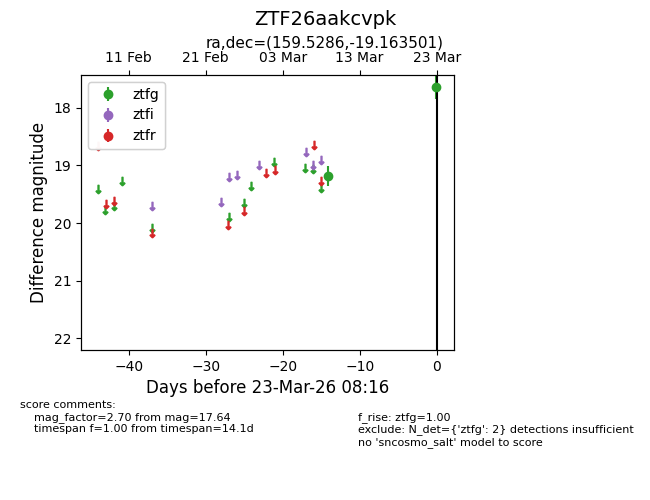
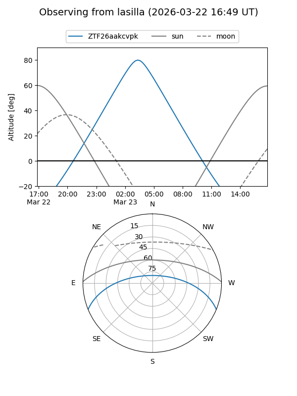
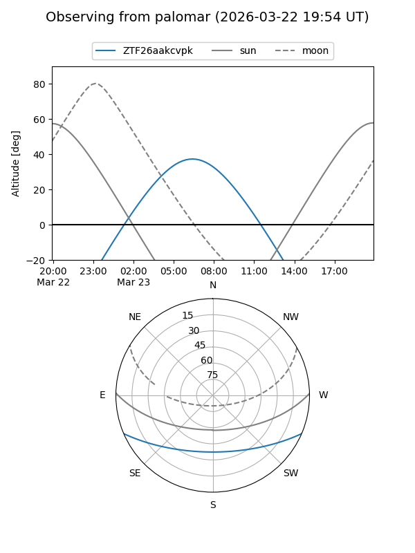

ZTF26aakcvpk
Target ZTF26aakcvpk at 2026-03-23 08:18
Aliases and brokers:
FINK: link
Lasair: link
ALeRCE: link
alt names
ZTF26aakcvpk (ztf,fink_ztf)
Coordinates:
equatorial (ra, dec) = 159.5286,-19.16350
equatorial (HMS+DMS) = 10:38:06.87,-19:09:48.60
galactic (l, b) = (264.4113,+33.55285)
Flags:
Photometry:
last ztfg=17.64
2 ztfg detections
Lightcurve

Visibility


Additional plots